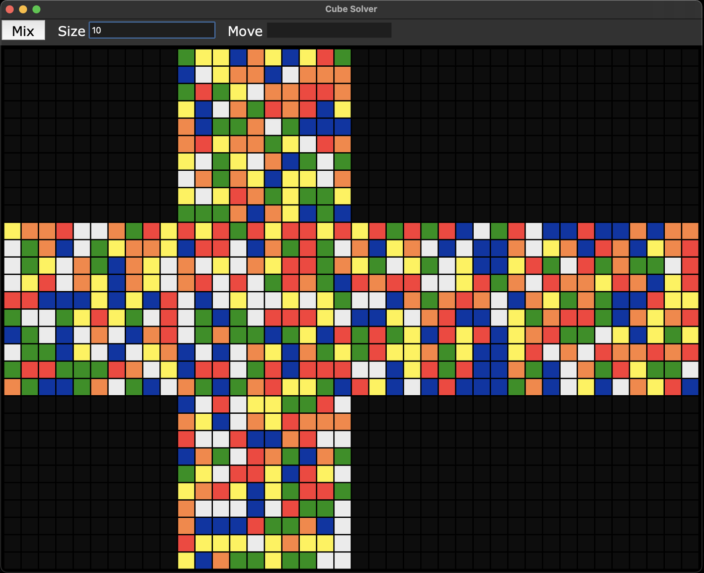
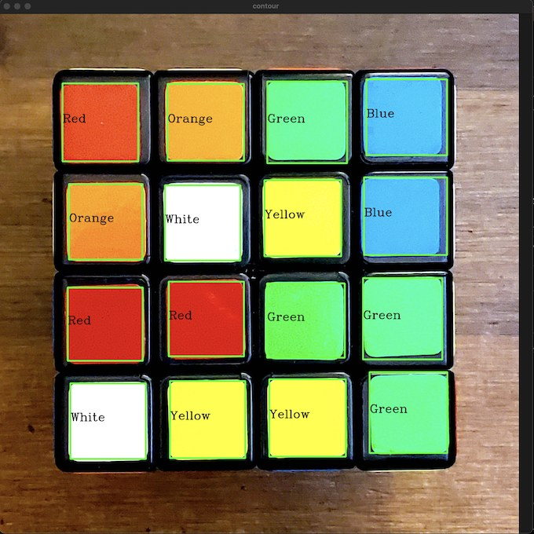
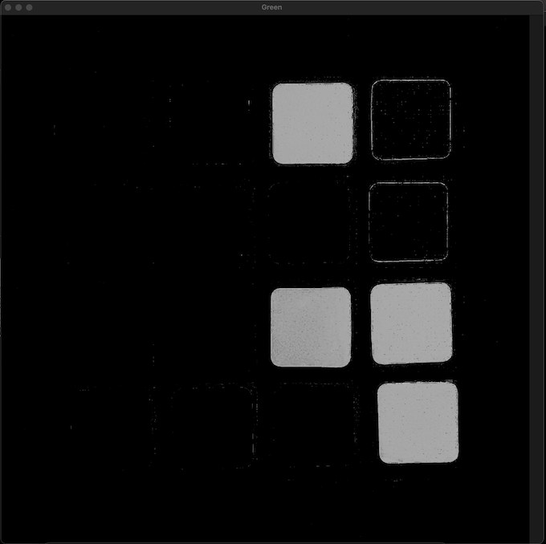

A Rubik’s Cube solver
A Rubik’s Cube program in Python, NumPy and Tkinter. The simulator, which draws a cube of any size as a flat net and lets you turn its layers, went up on GitHub in November 2021. A 3×3 solver using the beginner’s layer-by-layer method followed in early January 2022. The OpenCV script I wrote for reading a real cube off a webcam isn’t connected to it.
The app is older than its GitHub history: in March 2021 I gave it a sprite-animation intro.
The simulator
The cube is a list of six faces, each an N×N grid of numbers from 0 to 5, one per colour, drawn as an unfolded cross with one Tkinter frame per sticker. A move is an axis letter plus a two-digit layer number: x00 turns the first layer about the x axis, y02 the third layer about the y axis.
Turning a layer passes a row or column of stickers around the four faces that border it. An outer layer also rotates its own face a quarter turn, which is just a transpose followed by reversing each row. Every move turns the same way about its axis, so going the other way means doing it three times. None of this depends on N, so the same code happily turns a 10×10×10. Mix applies random moves (20 on a 3×3), and on odd sizes it never touches the middle slice, so each face’s centre sticker stays put.

The solver
Each step of the solver hunts for the pieces it needs and applies a fixed sequence of turns for whichever case it finds. The net has orange on top and red on the bottom, and the solve works from orange to red:
- Put the four orange edges on the orange face, each lined up with the centre of its other colour.
- Put in the four orange corners.
- Put in the four middle-layer edges with a left or right insertion sequence.
- Make a cross on the red face, with a sequence that depends on whether the red edges show a dot, an L or a line.
- Swap the last-layer edges until they match their centres.
- Move the last-layer corners to their places, then twist them until all the red stickers are on the red face.
Hitting Solve runs these steps on the cube in memory and records every move. A cleanup pass merges repeats (four of the same move cancel out, three become one turn the other way) and writes the result in cube notation, with i for an inverse turn and a leading 2 for a half turn. Then it restores the scramble and replays the moves on screen.
The README claims it can solve any of the 43 quintillion positions. Nothing in the repo tests that, and my own comment on the middle-layer step admits that edges sometimes come out flipped.
How long the solutions are
That 43 quintillion comes from counting pieces. The 8 corners can be arranged in \(8!\) ways and twisted 3 ways each; the 12 edges can be arranged in \(12!\) ways and flipped 2 ways each. The last corner’s twist and the last edge’s flip are fixed by the rest, and the corner and edge arrangements must be both even or both odd, which halves the total:
\[ 8! \cdot 3^7 \cdot \frac{12!}{2} \cdot 2^{11} = 43{,}252{,}003{,}274{,}489{,}856{,}000 . \]In 2010 a large computer search by Tomas Rokicki, Herbert Kociemba, Morley Davidson and John Dethridge showed that every one of these positions can be solved in 20 moves or fewer, counting a half turn as one move (cube20.org). My solver’s move list at the end of the clip above is a bit over 200 moves long.
The scanner
The Scan button in the solver window isn’t wired to anything. The scanning script, from November 2021, converts webcam frames to HSV and picks out the six colours with hand-tuned ranges. It runs Canny edge detection on each colour’s mask, with two sliders for the thresholds, and draws a box and a label on every contour bigger than 6000 pixels.




Update, August 2022: a second scanner
A second scanning script, from August 2022, asked for the cube size and drew a grid of that size over the camera image. For each cell it ran k-means with a single cluster, a roundabout way of taking the average colour, and printed the result. The function meant to turn that colour into a sticker name was still empty, and the script only ever asked for the green face.
Questions or comments? Email me at justin@justinvalentine.ca.
Comments